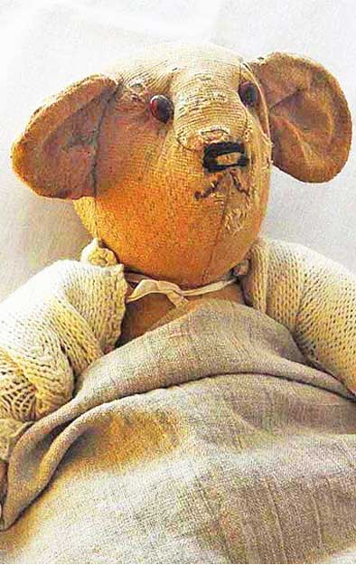
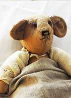
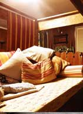
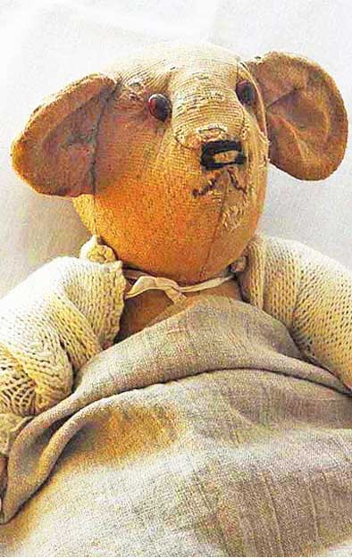
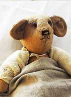
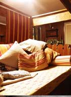
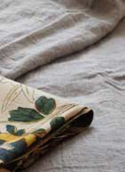
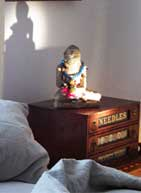
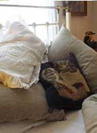
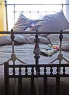

sally
 





I can’t tell you how thrilled I was to receive your parcel of linen – it is just divine! So beautifully made and the packaging so suits the product – what a pleasure unpacking it all. It looks wonderful, feels wonderful, and even smells wonderful! In this world of cheap throw away items a product made with such obvious care is a pleasure indeed. Thank you.
I enclosed a few photos from our very chaotic home here in Hervey Bay Australia from which we have a view of the ocean and a climate which makes linen the ideal bedding. Saving up to buy some more as soon as I can! Do you make single size covers and sheets by the way ~ Sally
A single is the same as a twin ~ Tricia



